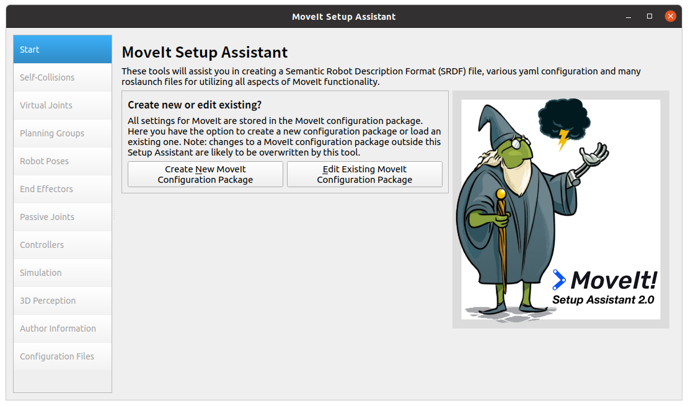

Gazeboでkinova gen3 lite を動かす方法
Gazeboでkinova gen3 lite を動かすにはros_kortexとmoveitを使用する。
参考ページ
前提条件
kinova gen3 liteのドライバーはARM64向けには提供されていないため、ARMベースのM1/M2チップ搭載のM1/M2_mac(新しいMac)では動作しない。ARM向けビルドはArtik 710,IMX6,NVidia Jetsonが用意されている。
macOSで行いたい場合は、AMDベースのIntelチップ搭載のIntel_mac(古めのMac)上にUTM上にUbuntu20.04を構築し、ROS1 Noeticをインストールして行う方法をおすすめする。
ros_kortexパッケージはconanに依存している。conanは、ビルド時にインターネット接続が必須であるため、PCがインターネットアクセスができることを事前に確認して置く必要がある。
インストール方法
以下には、Ubuntu20.04にROSNoeticがインストールされている前提で追加部分を記載する
依存関係のインストール
sudo apt install ros-noetic-moveit
sudo python3 -m pip install conan==1.59
sudo apt install ros-noetic-moveit-resources-prbt-moveit-config
sudo apt install ros-noetic-pilz-industrial-motion-planner
sudo apt install ros-noetic-rviz-visual-tools
sudo apt install ros-noetic-moveit-visual-tools
インストール確認
moveitが正常にインストールできているかを確認する。下記コマンドを入力後、moveitのセットアップアシスタントのウインドウが表示されれば、インストールできている。
ros_kortexのインストールに使用するconanの設定
conan config set general.revisions_enabled=1
conan profile new default --detect > /dev/null
conan profile update settings.compiler.libcxx=libstdc++11 default
ros_kortexのビルド
ros_kortexはaptではインストールできないので、ROSワークスペースを作成(既存のワークスペースがある場合は読み替えてください)し、githubからクローンして、ソースコードビルドを行う。
mkdir -p ~/kinova_ws/src
cd ~/kinova_ws/src
git clone -b noetic-devel https://github.com/Kinovarobotics/ros_kortex.git
cd ..
rosdep install --from-paths src --ignore-src -y
catkin_make
echo "source ~/kinova_ws/devel/setup.bash" >> ~/.bashrc
spawn_kortex_robot.launchの修正
ros_kortexパッケージは、ge3とgen3_liteに対応している。デフォルトではgen3が呼び出されるようになっているので、gen3_liteに変更する。
修正対象ファイルのパスは、~/kinova_ws/src/ros_kortex/kortex_gazebo/launch/spawn_kortex_robot.launchの15行目。
kinova_gen3_liteの動作確認
下記のコマンドでGazbo上にkinova gen3 liteが出現する。tab補完で入力できない場合はrospack profileコマンドを入力するとパスが解決する。

同時に起動しているRvizを使用して、moveit経由でkinova_gen3_liteを動かす手順は以下になります。
- Rvizの左ウインドウにある
Display→Global Options→Fixed Frameをmap→worldに変更する Display下部のAdd→By Display Type→rviz/RobotModelを選択してOKを選択(Rviz上にkinova_gen3_liteが表示される)- 同様に
Display下部のAdd→By Display Type→moveit_ros_visualization/MotionPlanningを選択してOK(Displayの下にMotionPlanningとRviz上にInteractiveMarkerが表示される) - Rviz上の
InteractiveMarkerを動かし、MotionPlanning上のPlan→Executeを選択すると、経路計画し、実行される